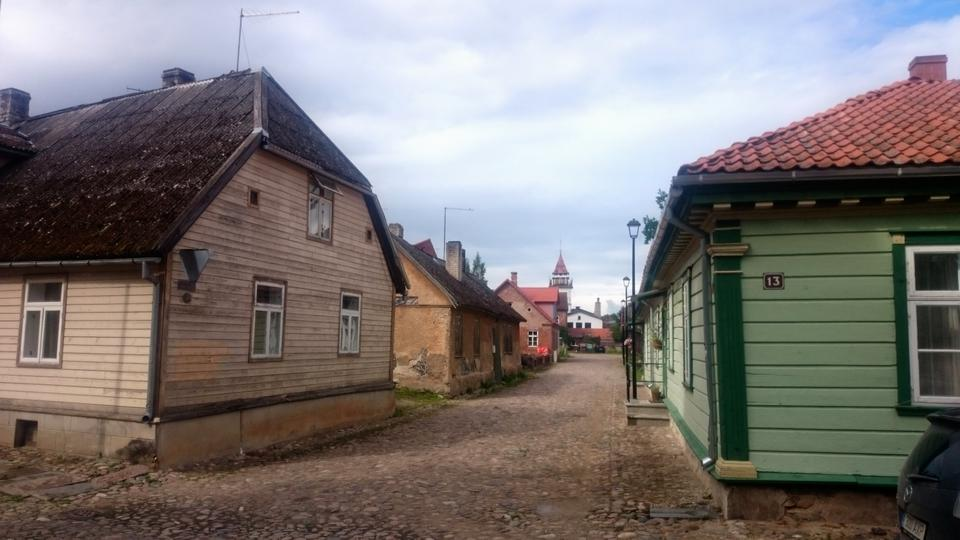
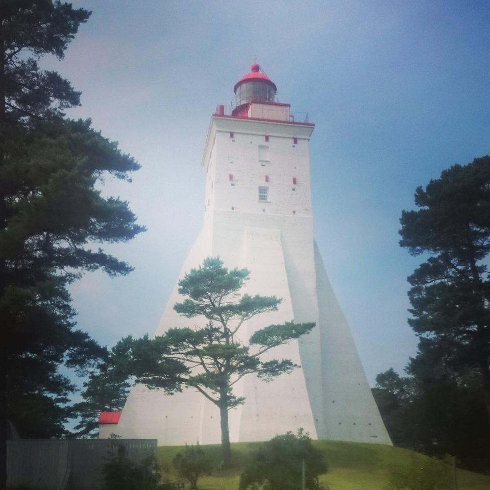

Эстония, Латвия, Литва (11 - 26 июля 2015 г.)
Вернулись из поездки по Балтийскому региону:
15 дней, 3981 км.
Подготовка
Можно сказать, что к поездке по Балтийскому региону мы готовились каждый год последние 5 лет, как минимум, в качестве запасного варианта. Взлетевший евро рухнувший рубль и короткий отпуск дали понять, что время Прибалтики настало. Начало июля было достаточно жарким и прохладное Балтийское море казалось очень логичным дополнением. Поездка 2014 года показала, что АКБ "не держит" холодильник даже одну ночь - купили новый АКБ. Заменили лобовое стекло, которое тоже показывало трещину. Визы получали чешские.
День 1. 11 Июля: Москва - Тарту.
Вечер 10 июля посвятил игре в тетрис, в попытках разместить скарб по новому, но старый вариант отказался наиболее оптимальным: в боксе сумки с одеждой и спальники; в багажнике: холодильник, коробка для продуктов, кухонная утварь и палатка; коляска ехала на переднем пассажирском месте. Выехали около 6 утра и достаточно быстро доехали до МАПП Куничина Гора. Неприятно удивили цены на ягоды у торговцев вдоль М9 - чем ближе граница, тем выше цены, даже в Москве ягоды были дешевле. Переход занял рекордные для нас 22 минуты. Отъехав несколько км от границы, остановились на обед.
На ночь встали в ближайшем к Тарту кемпинге при гостевом доме туристического хутора Куре.
День 2-3. 12-13 Июля: Тарту, Вильянди, Таллин.
Судя по погоде, лето закончилось. В Тарту приехали под дождём, который регулярно переходил в ливень, под которым мы и провели в городе несколько часов, гуляя по центру. Приятный город, но очень неприятная погода заставила ретироваться и двигаться в сторону Таллина. По пути заехали в город Вильянди, центр которого оказался просто великолепным, а учитывая прекратившийся дождь, оставил о себе исключительно приятные воспоминания. 
В Таллине остановились в Tallinn City Camping, в котором созданы все условия, чтобы возникло желание "быстро переночевать и уехать".
Не рекомендуем, но альтернатив вроде бы нет. Поставили палатку и поехали гулять по вечернему центру. Стоимость парковки в центре совершенно не гуманная и на следующий день мы добирались в центр на общественном транспорте. Посмотрев исторический центр как вечером, так и днём, можем уверенно сказать, что вечером значительно лучше.
День 4. 14 Июля: остров Хийумаа.
День начали с посещения Монастырь Святой Биргитты, находящийся в районе Пирита.
Вечером 13 долго обсуждали и прикидывали на какой из островов едем дальше, дожди прекратились, но температура не поднималась выше 19℃, т.ч. решили ограничиться островом Сааремаа. По пути заехали в небольшой музей паровозов в городке Хаапсалу. Подъехали к очереди на паром, судя по табло, до погрузки оставалось 10 минут, что обрадовало, и я немного удивился, тому, что в расписании паромы отправлялись раз в час. Посмотрел карту: мы стоим в очереди на паром на о. Хийумаа.Для меня загадка, каким образом я выбрал такой пункт назначения в TomTom, но особого расстройства мы не испытали.
По факту, Хийумаа - одно из самых лучших мест, посещённых нами за эту поездку. На мой взгляд, Ристимяги (или Гора Крестов) производит большее впечатление, нежели гора крестов близ Шяуляй.
Небольшой участок леса буквально заполнен крестами из всевозможных материалов, в ходи идут палки, веточки, кусочки изоленты, шишки, камни, в общем, всё, что есть под рукой. Всё началось 20-ого августа 1781 года, когда на этом месте собралось для богослужения несколько сотен шведов, которых выселяли на Украину. Первоначально Ристимяги являлось местом, где покидающие острова люди оставляли свои кресты. Сейчас же всё поменялось, и теперь кресты оставляют те, кто впервые прибыл на остров.
Очень атмосферное место, настойчиво рекомендуем. Но главными достопримечательностями на острове, безусловно, являются исторические маяки и природа. Стоит приехать сюда на велосипеде на неделю, чтобы неспешно объехать весь остров.
Культура кемпингов в Эстонии совершенно не развита, в чём мы убедились в Тарту и Таллине, по этому для ночёвки решили воспользоваться бесплатным для установки палаток Сяэретирби, расположенным на полуострове Кассари.
В Эстонии существует Центр Управления Государственными Лесами, который кроме всего прочего поддерживает и маркирует туристические тропы, содержит так называемые места для палаток - небольшие участки с 1-2 навесами, несколько столов, мангалом, поленницей дров и туалетом. Таких мест в Эстонии десятки, находятся они в самых приятных природных уголках и совершенно бесплатны. На сайте можно найти точные координаты, либо скачать приложение.
По периметру лагеря натянут провод, находящийся под напряжением - это защита от диких зверей, которые водятся в округе. Вечером провели испытание нового походного самовара. Отличная вещь, вода закипает за 3 минуты, т.ч. для чая не надо тратить газ, ну и эстетика, конечно.
День 4. 14 Июля: маяк Кыпу, остров Сааремаа.
Великолепное место, тут стоит провести пару дней просто наслаждаясь природой и впитывая запах можжевельника, но мы ограничены по времени.
До парома на Сааремаа есть ещё несколько часов, т.ч. решаем осмотреть округу. Для начала заехали посмотреть часовню Кассари - единственную действующую часовню из камня и с соломенной крышей.

Далее поехали на самый известный исторический маяк острова - маяк Кыпу (Kõpu tuletorn), который является старейшим действующим маяком в Балтийских странах и одним из старейших в мире. Очень красивый, рекомендуем. 
Залезли, конечно.
Там же и обедали.
Дальше был паром. Билеты стоит заказывать через интернет, ибо паром маленький и ходит всего 4 раза в день - есть шанс, что места не хватит, с другой стороны - это шанс провести ещё один день на этом замечательном острове.
Паром идёт около 40 минут, высадились и поехали в небольшой музей ветряных мельниц в Англа.
Заводим трактор, как поросёнок Пётр.
Начинался вечер и поехали искать место для ночёвки, в описании место для палаток Каласма говорилось, что оно идеально для "любования закатом", туда и поехали.
Побережье Сааремаа.
День 5-6. 15-16 Июля: Курессааре, Пярну.
Утром заехали в столицу острова - город Курессааре (Kuressaare). Прошлись по центральной улице, посмотрели епископский замок и поехали на материк, в Пярну.
День 7. 17 Июля: Цесис.
День 8-9. 18-19 Июля: Сигулда, Рига.
День 10. 20 Июля: Кулдига, Пурциемсская Белая дюна.
День 11-12. 21-22 Июля: Колкасрагс, Мазирбе, Вентспилс.
День 13. 23 Июля: Гора Крестов, Каунас.
День 14-15. 24-25 Июля: Каунас, Вильнюс.
Итоги.
Траты.
Подготовительные расходы:
- Визы - 7.068 ₽
- Страховки - 9.724 ₽
Расходы в поездке:
- Бензин - 17.613 ₽
- Паромы - 2.400 ₽
- Жильё - ~11.550 ₽ (182 €)
- Еда, развлечения, прочие расходы - ~50.000 ₽
Комментарии
Comments powered by Disqus